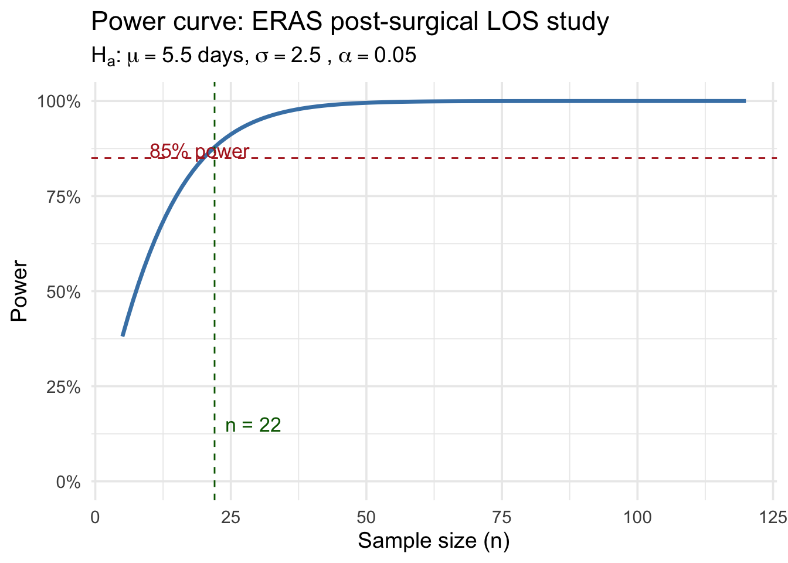

xbar <- 124.5; mu0 <- 120; sigma <- 15; n <- 36
se <- sigma / sqrt(n)
z_obs <- (xbar - mu0) / se
cat("Standard error:", se, "\n")Standard error: 2.5 cat("z_obs =", round(z_obs, 4))z_obs = 1.8BSTA 551
February 18, 2026
Since clinicians specifically suspect the device reads higher than truth, a one-sided (upper-tailed) test is appropriate.
\[H_0: \mu = 120 \quad \text{vs} \quad H_a: \mu > 120\]
A two-sided test would be appropriate if deviations in either direction were of concern, but the clinical question is directional.
Since the population is Normal with known \(\sigma\), by properties of the normal distribution:
\[\bar{X} \sim N\!\left(\mu_0,\, \frac{\sigma^2}{n}\right) = N\!\left(120,\, \frac{225}{36}\right) = N(120,\, 6.25)\]
Under \(H_0\), the standardized test statistic follows:
\[Z = \frac{\bar{X} - \mu_0}{\sigma/\sqrt{n}} \sim N(0, 1)\]
The observed value is:
\[z_{\text{obs}} = \frac{124.5 - 120}{15/\sqrt{36}} = \frac{4.5}{2.5} = 1.80\]
For an upper-tailed test at \(\alpha = 0.05\), the rejection region is \(Z \geq z_{0.05} = 1.645\).
Critical value z_0.05 = 1.6449 Observed z = 1.8 Reject H0? TRUESince \(z_{\text{obs}} = 1.80 > 1.645\), we reject \(H_0\) at \(\alpha = 0.05\). There is statistically significant evidence that the device reads higher than the true mean of 120 mmHg.
Type I error in this context: Concluding that the device is systematically biased (reads too high) when in reality it is accurate. Consequence: the hospital discards or recalibrates a perfectly good device unnecessarily.
Type II error in this context: Failing to detect that the device is systematically biased when it actually does read too high. Consequence: the hospital continues using an inaccurate device, potentially leading to incorrect clinical decisions.
The Type I error rate is \(\alpha = 0.05\), meaning there is a 5% chance of falsely concluding the device is biased if it is actually unbiased.
Since the consequence of a Type I error (discarding a good device at high cost) is severe, the hospital should prefer \(\alpha = 0.01\). A smaller \(\alpha\) makes it harder to reject \(H_0\), requiring stronger evidence before concluding the device is biased. The trade-off is reduced power (higher \(\beta\)), meaning the test is less likely to detect a real bias — but in this context, that is the more acceptable risk.
glucose <- c(98, 103, 91, 107, 96, 88, 101, 95, 99, 102, 94, 97, 89, 100, 93)
n <- length(glucose)
xbar <- mean(glucose)
s <- sd(glucose)
mu0 <- 105
alpha <- 0.05
cat("n =", n, "\n")n = 15 x-bar = 96.8667 s = 5.3568Hypotheses: The intervention aims to reduce fasting glucose, so this is a one-sided lower-tailed test.
\[H_0: \mu = 105 \quad \text{vs} \quad H_a: \mu < 105\]
Test statistic:
\[T = \frac{\bar{X} - \mu_0}{S/\sqrt{n}} = \frac{97.53 - 105}{5.30/\sqrt{15}}\]
t_stat <- (xbar - mu0) / (s / sqrt(n))
t_crit <- qt(alpha, df = n - 1) # lower-tailed: negative critical value
cat("t statistic:", round(t_stat, 4), "\n")t statistic: -5.8804 Critical value t_{0.05, 14} = -1.7613 Rejection region: T <= -1.7613 Reject H0? TRUESince \(t_{\text{obs}} = -5.88\) is less than \(t_{0.05,14} = -1.761\), we reject \(H_0\) at \(\alpha = 0.05\). There is statistically significant evidence that the dietary intervention reduces mean fasting glucose below 105 mg/dL.
For a lower-tailed test, the p-value is \(P(T_{14} \leq t_{\text{obs}})\).
Interpretation: If the true mean fasting glucose in this population were 105 mg/dL (i.e., if the intervention had no effect), there would be only a 0% chance of observing a sample mean as low as or lower than 97.53 mg/dL just by chance with a sample of 15 patients. This constitutes strong evidence against \(H_0\).
A 95% one-sided lower confidence bound (the interval \((-\infty, \bar{x} + t_{\alpha, n-1} \cdot s/\sqrt{n})\)) provides an upper bound on \(\mu\):
\[\left(-\infty,\; \bar{x} + t_{0.05,14} \cdot \frac{s}{\sqrt{n}}\right)\]
Note: since \(H_a: \mu < 105\), we report an upper confidence bound.
t_crit_upper <- qt(1 - alpha, df = n - 1) # +1.761
upper_bound <- xbar + t_crit_upper * (s / sqrt(n))
cat("95% upper confidence bound:", round(upper_bound, 4), "\n")95% upper confidence bound: 99.3028 Interval: (-inf, 99.3028 )Does the interval exclude mu0 = 105? TRUEThe 95% upper confidence bound is 99.303 mg/dL. Since the entire interval \((-\infty,\; 99.303)\) lies below \(\mu_0 = 105\), this is consistent with rejecting \(H_0\) at \(\alpha = 0.05\).
One Sample t-test
data: glucose
t = -5.8804, df = 14, p-value = 2.001e-05
alternative hypothesis: true mean is less than 105
95 percent confidence interval:
-Inf 99.30277
sample estimates:
mean of x
96.86667 The t.test() output confirms: \(t = -5.88\), \(p = 2\times 10^{-5}\), 95% upper bound \(= 99.303\).
The hospital wants to detect a difference in either direction (the program could increase or decrease readmissions), so a two-sided test is appropriate.
\[H_0: p = 0.22 \quad \text{vs} \quad H_a: p \neq 0.22\]
n <- 180; x <- 31; p0 <- 0.22
p_hat <- x / n
se_null <- sqrt(p0 * (1 - p0) / n)
z_obs <- (p_hat - p0) / se_null
cat("p-hat =", round(p_hat, 4), "\n")p-hat = 0.1722 SE under H0 = 0.03088 z = -1.5474\[\hat{p} = \frac{31}{180} = 0.1722, \quad Z = \frac{0.1722 - 0.22}{\sqrt{0.22 \times 0.78 / 180}} = -1.5474\]
pval <- 2 * pnorm(z_obs) # lower tail (z_obs is negative)
z_crit <- qnorm(0.975)
cat("Two-sided p-value:", round(pval, 5), "\n")Two-sided p-value: 0.12177 Critical value z_{0.025} = 1.96 Reject H0? FALSEThe two-sided p-value is 0.1218. Since \(p = 0.1218 < 0.05\), we reject \(H_0\) at \(\alpha = 0.05\). There is statistically significant evidence that the readmission rate under the new program differs from 22%.
Note: The direction of the effect is a reduction — \(\hat{p} = 0.172\) (about 17.2%) is lower than \(p_0 = 0.22\) — which is clinically encouraging.
# Wilson score interval via prop.test()
prop_result <- prop.test(x, n, p = p0, alternative = "two.sided", correct = FALSE)
ci <- prop_result$conf.int
cat("Wilson score 95% CI: (", round(ci[1], 4), ",", round(ci[2], 4), ")\n")Wilson score 95% CI: ( 0.1241 , 0.2341 )Does p0 = 0.22 fall inside the CI? TRUEThe 95% Wilson score confidence interval is approximately \((0.124, 0.234)\). Since \(p_0 = 0.22\) lies outside this interval, we reject \(H_0\) — consistent with the hypothesis test conclusion. This illustrates CI–test duality: a \(100(1-\alpha)\%\) CI excludes values that would be rejected at level \(\alpha\).
The standard rule of thumb for the large-sample z test for proportions is:
\[n p_0 \geq 10 \quad \text{and} \quad n(1 - p_0) \geq 10\]
n*p0 = 39.6 n*(1-p0) = 140.4 Both >= 10? TRUEBoth conditions are satisfied (\(np_0 = 39.6\) and \(n(1-p_0) = 140.4\)), so the Normal approximation is valid here.
The ERAS protocol is intended to reduce LOS, so this is a one-sided lower-tailed test:
\[H_0: \mu = 7 \quad \text{vs} \quad H_a: \mu < 7\]
A two-sided test would be appropriate if we had no prior expectation of direction. Here, the clinical hypothesis is explicit: ERAS is expected to shorten (not lengthen) stay.
For a lower-tailed z test, the power against \(\mu_a = 5.5\) is:
\[\text{Power} = \Phi\!\left(\frac{\mu_0 - \mu_a}{\sigma/\sqrt{n}} - z_\alpha\right)\]
where \(z_\alpha = z_{0.05} = 1.645\).
mu0 <- 7; mu_a <- 5.5; sigma <- 2.5; n <- 40; alpha <- 0.05
z_alpha <- qnorm(1 - alpha)
effect_over_se <- (mu0 - mu_a) / (sigma / sqrt(n))
power_n40 <- pnorm(effect_over_se - z_alpha)
cat("z_alpha (z_0.05) =", round(z_alpha, 4), "\n")z_alpha (z_0.05) = 1.6449 (mu0 - mu_a) / (sigma/sqrt(n)) = 3.7947 Argument to Phi: 2.1499 Power at n = 40: 0.9842\[\text{Power} = \Phi\!\left(\frac{7 - 5.5}{2.5/\sqrt{40}} - 1.645\right) = \Phi\!\left(3.795 - 1.645\right) = \Phi(2.15) \approx 0.984\]
The power is approximately 98.4% at \(n = 40\), which is below the 85% target.
result <- power.t.test(
delta = 1.5,
sd = 2.5,
sig.level = 0.05,
power = 0.85,
type = "one.sample",
alternative = "one.sided"
)
result
One-sample t test power calculation
n = 21.39359
delta = 1.5
sd = 2.5
sig.level = 0.05
power = 0.85
alternative = one.sidedRequired sample size (rounded up): 22power.t.test() gives \(n \approx 22\) patients (rounding up to the nearest integer). Note this uses the t distribution rather than the normal approximation, so it is slightly more conservative than the z-based formula.
n_vals <- 5:120
power_vals <- pnorm((mu0 - mu_a) / (sigma / sqrt(n_vals)) - qnorm(1 - alpha))
tibble(n = n_vals, power = power_vals) |>
ggplot(aes(x = n, y = power)) +
geom_line(color = "steelblue", linewidth = 1.2) +
geom_hline(yintercept = 0.85, linetype = "dashed", color = "firebrick") +
geom_vline(xintercept = n_required, linetype = "dashed", color = "darkgreen") +
annotate("text", x = n_required + 2, y = 0.15, hjust = 0,
label = paste0("n = ", n_required), color = "darkgreen", size = 4.5) +
annotate("text", x = 10, y = 0.87, hjust = 0,
label = "85% power", color = "firebrick", size = 4.5) +
labs(
x = "Sample size (n)",
y = "Power",
title = bquote("Power curve: ERAS post-surgical LOS study"),
subtitle = bquote(H[a]*":"~mu == .(mu_a)~"days,"~sigma == .(sigma)~","~alpha == .(alpha))
) +
scale_y_continuous(limits = c(0, 1), labels = scales::percent) +
theme_minimal(base_size = 14)
The power curve shows that power increases monotonically with \(n\). The 85% target (red dashed line) is achieved at \(n = 22\) (green dashed line).
n_obs <- 55; xbar_obs <- 6.1
se_obs <- sigma / sqrt(n_obs)
z_obs <- (xbar_obs - mu0) / se_obs
pval <- pnorm(z_obs) # lower-tailed
cat("Observed z:", round(z_obs, 4), "\n")Observed z: -2.6698 p-value (lower-tailed): 0.00379 Statistically significant at alpha = 0.05? TRUE
Observed reduction (days): 0.9
Target reduction (days): 1.5P-value: \(p \approx 0.004\).
Clinical interpretation: If the true mean LOS under ERAS were the same as the standard protocol (7 days), there would be only about a 0.4% chance of observing a sample mean as low as 6.1 days or lower in a sample of 55 patients just by chance — strong evidence that ERAS does reduce LOS.
Statistical vs. clinical significance: The result is statistically significant at \(\alpha = 0.05\) (\(p \approx 0.004 < 0.05\)). However, the observed reduction is \(7 - 6.1 = 0.9\) days, which is smaller than the clinically meaningful threshold of 1.5 days the team set out to detect. So the study detected a real effect, but one smaller than originally targeted. This illustrates an important distinction: statistical and clinical significance are not the same thing. With \(n = 55\), the study has enough power to detect even modest departures from \(\mu_0 = 7\), and a 0.9-day reduction, while real, may not justify the cost and workflow changes involved in implementing ERAS. Conversely, a study can also be statistically non-significant yet show a clinically important trend if it is underpowered. Researchers and clinicians must evaluate both the \(p\)-value and the magnitude of the estimated effect.
If all 500 null hypotheses are true and each test is conducted at \(\alpha = 0.05\):
\[E(\text{false positives}) = 500 \times 0.05 = 25\]
This is called the family-wise error rate (FWER) problem (or multiple comparisons problem). When conducting many simultaneous tests, the probability of at least one false positive becomes very large even if every individual test is properly conducted. Declaring 37 genes “significant” when 25 of them might be false positives makes the findings unreliable.
The Bonferroni correction controls the FWER at level \(\alpha_{\text{FWER}}\) by testing each hypothesis at:
\[\alpha^* = \frac{\alpha_{\text{FWER}}}{m} = \frac{0.05}{500} = 0.0001\]
set.seed(551)
sig_pvals <- runif(37, min = 0, max = 0.05)
# Apply Bonferroni: adjusted p-values = min(raw p-value * m, 1)
adj_pvals_bonf <- p.adjust(sig_pvals, method = "bonferroni", n = m)
n_sig_bonf <- sum(adj_pvals_bonf < 0.05)
cat("Number of genes remaining significant after Bonferroni:", n_sig_bonf, "\n\n")Number of genes remaining significant after Bonferroni: 0 tibble(
raw_p = round(sig_pvals, 5),
bonf_adj_p = round(adj_pvals_bonf, 5),
significant = adj_pvals_bonf < 0.05
) |> arrange(raw_p) |> print(n = 10)# A tibble: 37 × 3
raw_p bonf_adj_p significant
<dbl> <dbl> <lgl>
1 0.0034 1 FALSE
2 0.00411 1 FALSE
3 0.00439 1 FALSE
4 0.00459 1 FALSE
5 0.00489 1 FALSE
6 0.00556 1 FALSE
7 0.00694 1 FALSE
8 0.00903 1 FALSE
9 0.0101 1 FALSE
10 0.0106 1 FALSE
# ℹ 27 more rowsAfter Bonferroni correction, 0 genes remain significant. The correction is very stringent: since \(\alpha^* = 0.0001\), a raw p-value must be less than \(0.0001\) to survive, and none of the 37 simulated p-values (all generated uniformly on \([0, 0.05]\)) fall that low.
The Bonferroni procedure controls the family-wise error rate (FWER) — the probability of making any false discovery. This is very conservative: it virtually eliminates false positives but at the cost of very low power. In genomics, when screening thousands of genes, the biologically realistic expectation is that some genes truly are differentially expressed. Discarding all discoveries except those meeting a very stringent threshold means many true effects go undetected.
The Benjamini-Hochberg (BH) procedure controls the false discovery rate (FDR) — the expected proportion of false positives among declared discoveries. This is a more lenient criterion that allows a small, controlled fraction of discoveries to be false. In exploratory genomics screens (where you expect hundreds of truly DE genes and can follow up with validation), tolerating 5% false discoveries to preserve power over truly DE genes is scientifically preferable to the near-zero power of Bonferroni.
In short: Bonferroni asks “did I make even one mistake?”; BH asks “of the genes I flagged, roughly what fraction are wrong?” — and the latter question is more scientifically appropriate for large-scale discovery.